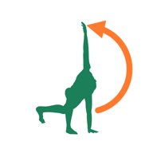

ジュニアアスリートのためのストレッチ＆トレーニング3D サポート
「ジュニアアスリートのためのストレッチ＆トレーニング3D」は、成長期の選手が体の柔らかさを保つストレッチと、体を支える筋力をつけるトレーニングを、3Dの人体モデルの動きで説明するアプリです。選手・保護者・指導者が一緒に見ることを想定しています。
使い方
- 「目的から選ぶ」で、競技（野球・サッカー・跳ぶ競技）、気になる部位、検診の結果シートのいずれかと場面（練習の前・練習の後・家で など）を選ぶと、合った運動が「◎最優先・○推奨・△余裕があれば」の順に表示されます。
- 「すべての運動」では、31種類の運動を種類別に見られます。
- 運動を選ぶと3Dの人体がお手本の動きを再生します。速さ（0.5×・1×）と、正面・側面・背面・上・斜めの視点を切り替えられます。指でなぞると回転、ピンチで拡大・縮小、右上のボタンで全画面表示にできます。
- 画面上部の「右・左」で、伸ばす・使う側を切り替えると、動きが左右反転します。
- 「個別メニュー」には、医師・セラピスト・トレーナーと相談して決めた運動をまとめ、回数などのメモを書き込めます。
- 「出典」で参考にした文献の一覧、「?」で痛みの目安などの注意を表示します。
よくある質問
インターネット接続は必要ですか？
不要です。すべての機能がオフラインで動作します。
医療機器ですか？
いいえ。一般的な運動の説明を目的とした教材であり、診断や治療方針の決定を行うものではありません。痛みがあるときは運動をやめ、医療機関で相談してください。運動のメニューは、担当の医師・セラピスト・トレーナーの指示を優先してください。
お問い合わせ
ご意見・不具合のご報告は、下記までメールでお送りください。
natchi@symphony.plala.or.jp
プライバシーポリシー